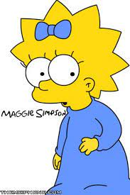

Traduzido do inglês-Margaret Evelyn Simpson é uma personagem fictícia da série animada de televisão O
Simpsons e faz parte da família titular,
principalmente o membro mais jovem. Ela apareceu pela
primeira vez na televisão no curta "Good Night" do Tracey Ullman Show em 19 de abril de 1987.
Maggie é vista como uma adolescente punk. Diz-se que ela tem uma bela voz para cantar e, de acordo com Homer, nunca se cala (ironicamente, quando ela tenta falar, ela é sempre interrompida). Ela também gosta de brincar muito com seus amigos e familiares. 
Margaret "Maggie" J. Jojo Elizabeth Mackson Stevan Simpson é a filha mais nova de Homer e
Marge.
São comuns as piadas onde Homer esquece o nome dela ou até mesmo de sua existência,
não são muitos os episódios onde Maggie tem destaque, mas em alguns significativos episódios
podemos perceber que ela é muito inteligente. Em 2012 Maggie ganhou seu curta metragem, The
Longest Daycare que foi exibido antes de alguns filmes da Fox nos cinemas e chegou a concorre
ao Oscar de melhor curta metragem em Animação. E Maggie é conhecida por estar frequentemente
chupando a sua a chupeta.